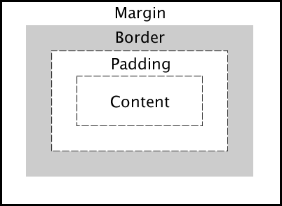
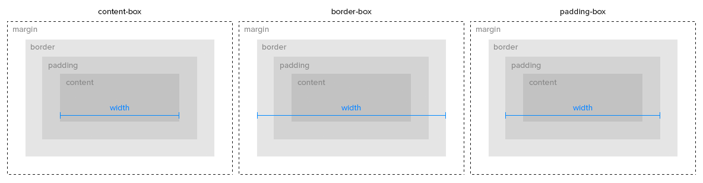
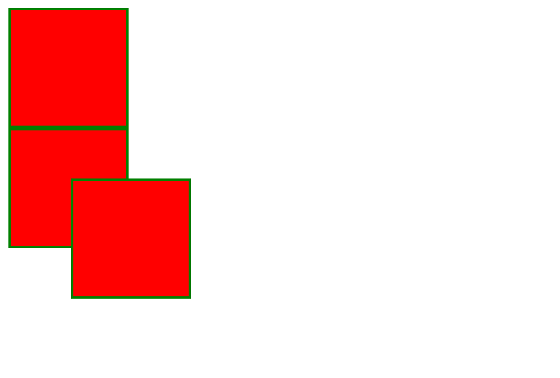

Capses i disposició
Cada element és una capsa: com es mesura, com es mou i com es reparteix l'espai.
Què sabràs fer en acabar
- Explicar les quatre capes del model de capsa.
- Calcular l'amplada real d'un element i fer servir
box-sizing. - Triar el valor de
positionadequat per a cada cas. - Distribuir elements amb Flexbox i amb Grid.
- Adaptar una pàgina al mòbil amb media queries.
El model de capsa
El navegador tracta cada element com una capsa rectangular amb quatre capes, de dins cap a fora:

| Capa | Propietat | Com és |
|---|---|---|
| Contingut | width, height | On hi ha el text o la imatge |
| Farciment | padding | Espai interior; agafa el fons de l'element |
| Vora | border | La línia; gruix, estil i color |
| Marge | margin | Espai exterior, transparent; pot ser negatiu |
Quant ocupa de debò
Per defecte (box-sizing: content-box) l'amplada només compta el contingut, i el farciment i la vora s'hi sumen. Amb border-box, l'amplada que escrius ja ho inclou tot menys el marge.
width: 200px; padding: 20px; border: 5px | Amplada visible |
|---|---|
content-box | 200 + 40 + 10 = 250 px |
border-box | 200 px |

Per això gairebé tots els projectes comencen amb aquesta regla:
*, *::before, *::after {
box-sizing: border-box;
}
Posicionar amb position
| Valor | Referència | Surt del flux? |
|---|---|---|
static | Cap: ignora top i left; és el valor per defecte | No |
relative | La seva posició normal | No: deixa el forat |
absolute | L'avantpassat posicionat més proper, o la pàgina | Sí |
fixed | La finestra; no es mou en fer scroll | Sí |
sticky | Relatiu fins a un llindar; després, fix | No |

La parella habitual és un pare amb relative i un fill amb absolute: el fill es col·loca respecte del pare, per exemple un text sobre una imatge.
Flexbox i Grid
Per repartir espai entre elements no cal position: hi ha dos sistemes pensats per a això.
| Flexbox | Grid | |
|---|---|---|
| Dimensions | Una: fila o columna | Dues: files i columnes |
| S'activa amb | display: flex | display: grid |
| Propietats clau | justify-content, align-items, flex-wrap, gap | grid-template-columns, grid-template-areas, gap |
| Ideal per | Menús, barres, targetes en fila | L'estructura de tota la pàgina |
Centrar i fer una graella
Centrar una capsa horitzontalment i verticalment dins de la pantalla:
.contenidor {
display: flex;
justify-content: center; /* eix horitzontal */
align-items: center; /* eix vertical */
min-height: 100vh;
}
Una graella de targetes que s'adapta sola a l'amplada:
.targetes {
display: grid;
grid-template-columns: repeat(auto-fit, minmax(200px, 1fr));
gap: 20px;
}
Una pàgina que es veu bé al mòbil
Més de la meitat de les visites arriben des del mòbil. Les media queries apliquen regles només a partir d'una amplada: es dissenya per a pantalla petita i s'amplia per a la gran (mobile first). Els temes dels gestors de continguts ja ho fan, i el CSS addicional ha de respectar-ho.
.pagina { display: block; }
@media (min-width: 768px) {
.pagina {
display: grid;
grid-template-columns: 220px 1fr;
}
}
Veure la capsa a l'inspector
A l'inspector del navegador, la pestanya Disposició dibuixa el model de capsa de l'element seleccionat amb els valors de cada capa. Els contenidors flex i grid porten una etiqueta al costat: si hi fas clic, el navegador en pinta les línies sobre la pàgina.
Criteris professionals
- Posa
box-sizing: border-boxa tot el document. - Grid per a l'estructura, Flexbox per als components.
- Deixa
position: absoluteper a detalls, no per maquetar la pàgina. - Prova sempre la pàgina a 375 px d'amplada.
- Deixa prou farciment als botons perquè es puguin tocar amb el dit.
Errors habituals
- Dues columnes al 50 % no hi caben
-
Causa Amb
content-box, el farciment i la vora se sumen al 50 %.Solució Fes servir
border-boxogapamb Grid. - L'element
absolutese'n va a la cantonada de la pàgina -
Causa Cap avantpassat té
positiondiferent destatic.Solució Posa
position: relativeal pare que ha de fer de referència. justify-contentno fa res-
Causa S'ha posat als fills, no al contenidor.
Solució Les propietats de Flexbox i Grid van al contenidor.
Resum
- Capsa: contingut,
padding,borderimargin. border-boxfa que l'amplada escrita sigui l'amplada real.relativees mou des del seu lloc;absolute, respecte del pare posicionat;fixed, respecte de la finestra.- Flexbox reparteix en una dimensió; Grid, en dues.
- Les media queries adapten la pàgina a cada pantalla.
Comprova el que has après
content-box, width: 300px, padding: 10px i border: 5px, quant fa d'ample la capsa visible?justify-content: center?